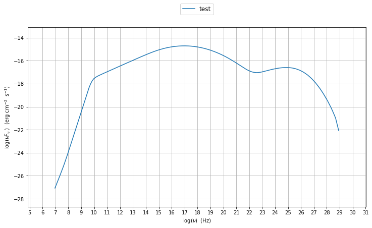

jet_model module user guide¶
In this section we describe how to use the module :mod:`.jet_model` to buil a model of jet able to reproduce SSC/EC emission processes.The :mod:`.jet_model` allows to build a jet model providing an interface to call the BlazarSED code. The BlazarSED code is a numerical accurate C code, to evaluate SSC/EC emission processes in a relativistic jet. The python wrappper is built using SWIG. A jet can be built using the the :class:`.Jet` class, istanciating a jet object.
In [1]:
import BlazarSEDFit as SEDFit
myJet=SEDFit.Jet(name='test',electron_distribution='lppl')
directory .//test_BalzarSED_prod/ already existing
removing existing dir
the directory .//test_BalzarSED_prod/ has been created
In [2]:
myJet.parameters.show_pars()
--------------------------------------------------------------------------------------------------------------
model parameters:
Name | Type | Units | value | phys. boundaries
--------------------------------------------------------------------------------------------------------------
gmax | high-energy-cut-off | Lorentz-factor | +1.000000e+08 | [+1.000000e+00,No ]
gmin | low-energy-cut-off | Lorentz-factor | +2.000000e+00 | [+1.000000e+00,No ]
N | electron_density | cm^-3 | +1.000000e+02 | [+0.000000e+00,No ]
s | LE_spectral_slope | | +2.000000e+00 | [-1.000000e+01,+1.000000e+01]
r | spectral_curvature | | +4.000000e-01 | [-1.000000e+01,+1.000000e+01]
gamma0_log_parab | turn-over-energy | Lorentz-factor | +1.000000e+04 | [+1.000000e+00,No ]
z_cosm | redshift | | +1.000000e-01 | [+0.000000e+00,No ]
B | magnetic_field | G | +1.000000e-01 | [+0.000000e+00,No ]
R | region_size | cm | +3.000000e+15 | [+0.000000e+00,No ]
beam_obj | beaming | | +1.000000e+01 | [+1.000000e+00,No ]
--------------------------------------------------------------------------------------------------------------
At this point one can evaluate the SSC/EC emission for this jet model using the instruction
In [3]:
myJet.eval()
('fill name', 'Sum')
('fill name', 'Sync')
('fill name', 'SSC')
and plot the corresponding SED:
In [4]:
myPlot=SEDFit.Plot()
myPlot.add_model_plot(myJet,autoscale=True)
myPlot.save('jet.png')
running PyLab in interactive mode

To change one of the parameter in the model:
In [5]:
myPlot=SEDFit.Plot()
myPlot.add_model_plot(myJet,autoscale=True)
myJet.set_par('gamma0_log_parab',val=1.0E5)
myJet.eval()
myPlot.add_model_plot(myJet,label='gamma0_log_parab=1E5',autoscale=True)
myPlot.save('jet1.png')
running PyLab in interactive mode
('fill name', 'Sum')
('fill name', 'Sync')
('fill name', 'SSC')

To plot all the components
In [6]:
myPlot=SEDFit.Plot()
for c in myJet.spectral_components: myPlot.add_model_plot(c.SED,autoscale=True)
running PyLab in interactive mode

In [ ]:
In [ ]:
In [ ]: